Hi-Fi to the People
Since 2011
Bringing sound to the people, room by room.
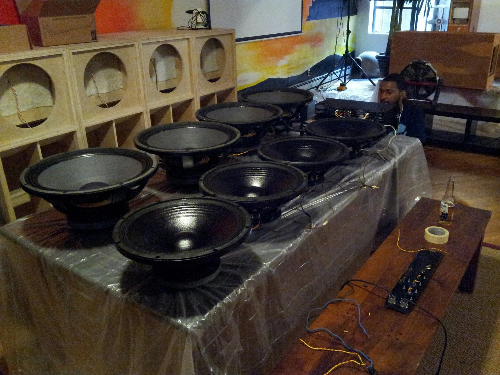
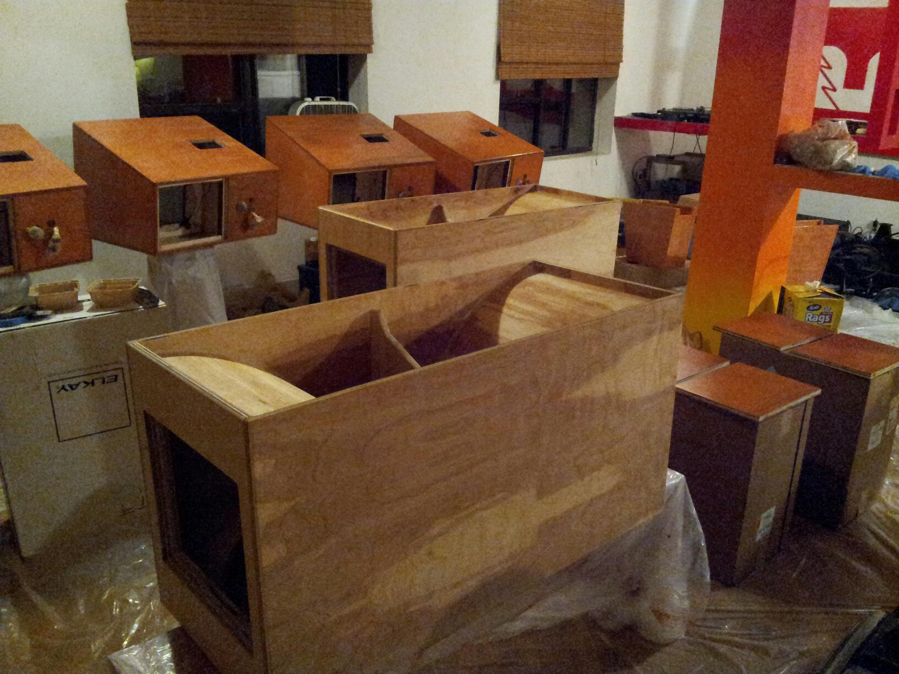
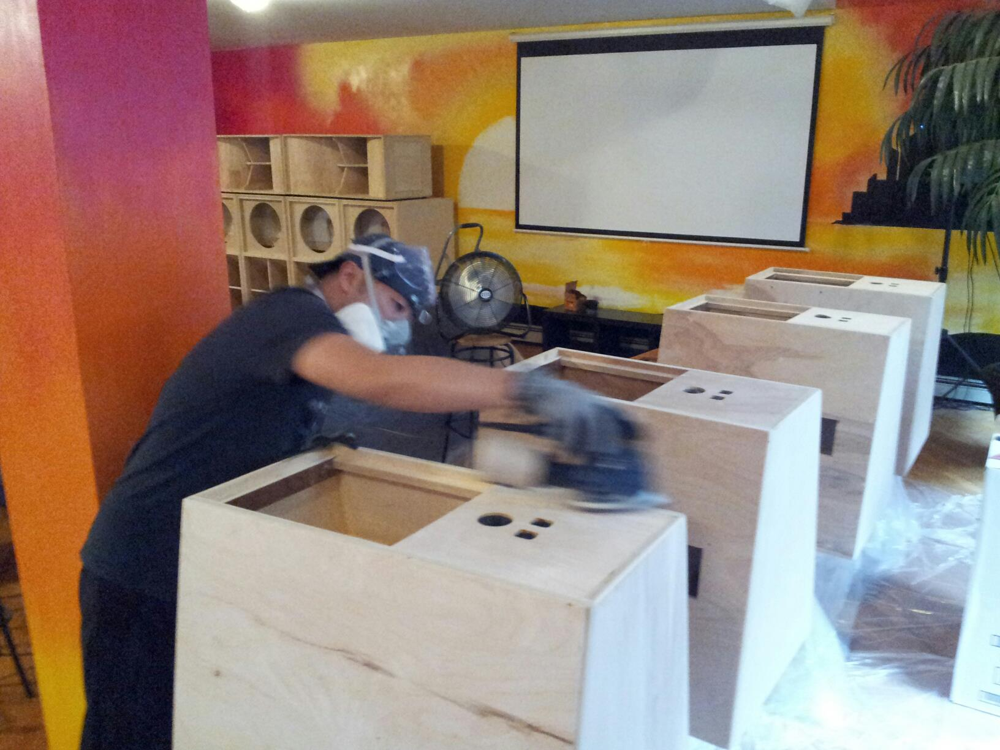
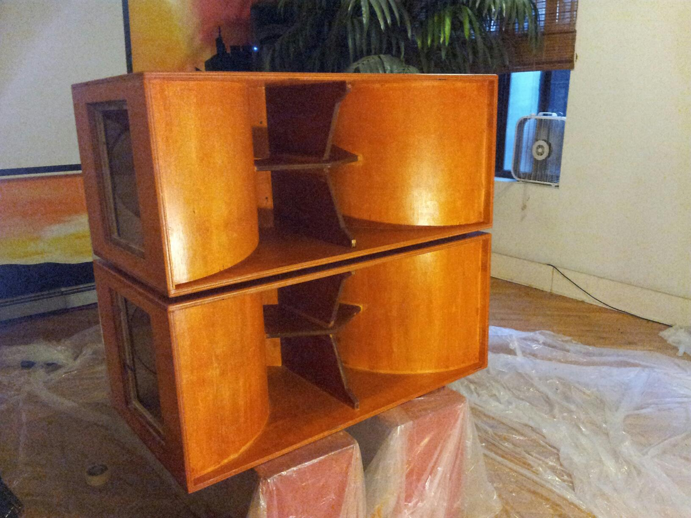
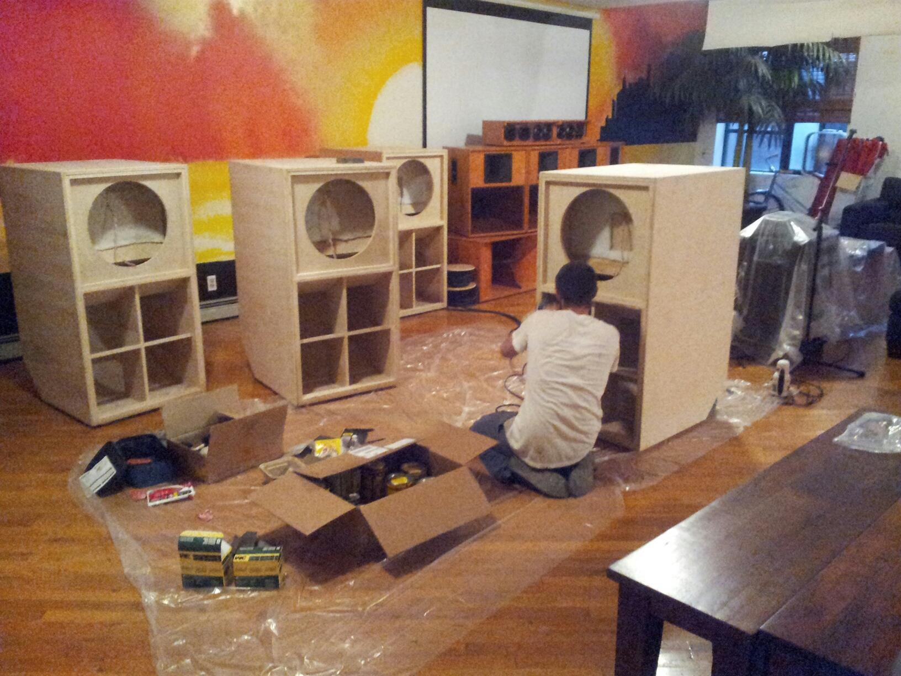
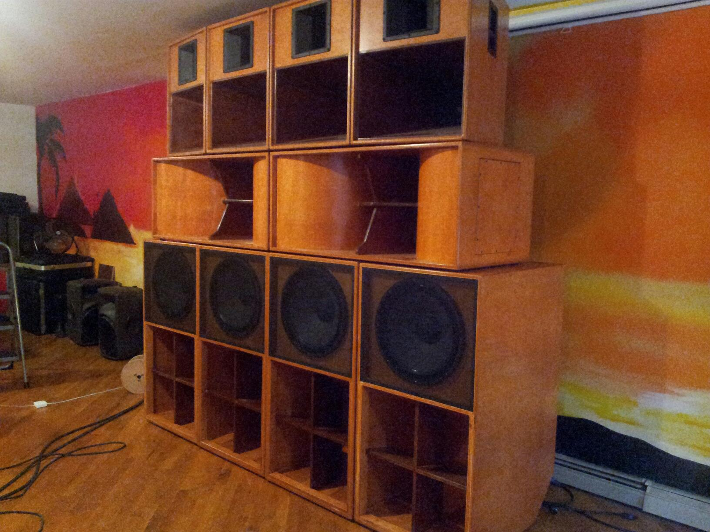
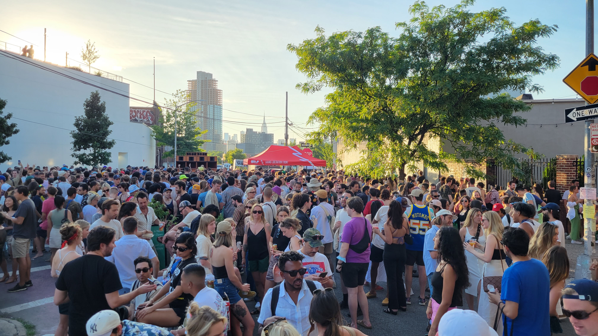
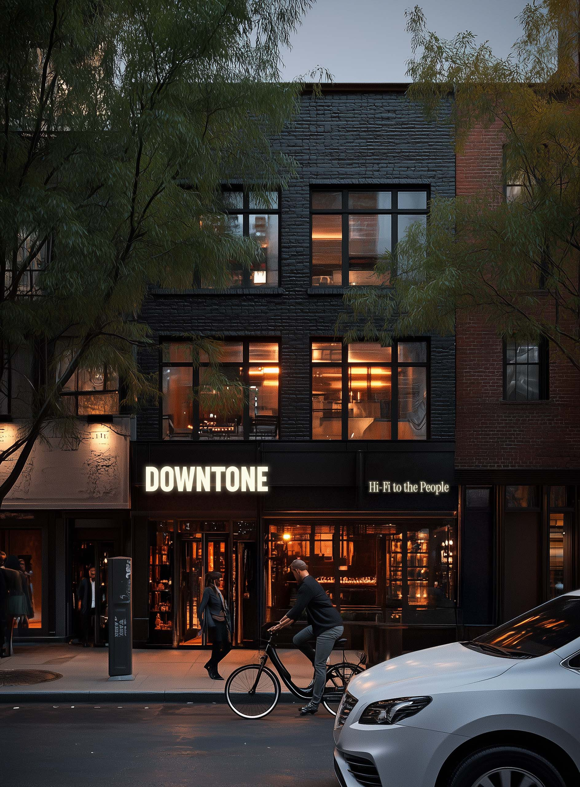
Section 00
Can the communal ethos of sound system culture become a durable business?
The tradeoff everyone assumes
Communal sound culture rarely survives growth. It either hardens into audiophile exclusivity — where the gear becomes the point and the room becomes a showroom — or it dilutes into ordinary hospitality that treats music as background. The communal part is the first thing lost.
We do not think that is true.
Downtone is built to prove the communal ethos can be the foundation of a durable hospitality business — expressed through everyday use, repeat behavior, and a room that stays full and meaningful on an ordinary Tuesday.
Why now · who holds it
Why now
Nearly two decades through Dub-Stuy and Sound Liberation Front — relationships, operational experience, cultural credibility. We have built temporary versions of this many times. 301 Grand Street is the first where location, timing, community, and foundation align.
Stewardship
Not a founder's room run by hired staff. The core team holds a real stake — not just a role — because the ethos is carried by the people responsible for the room, not by the sound system or the design. The institution matters more than any individual.
301 Grand Street
The first permanent home for a room we have built many times before.
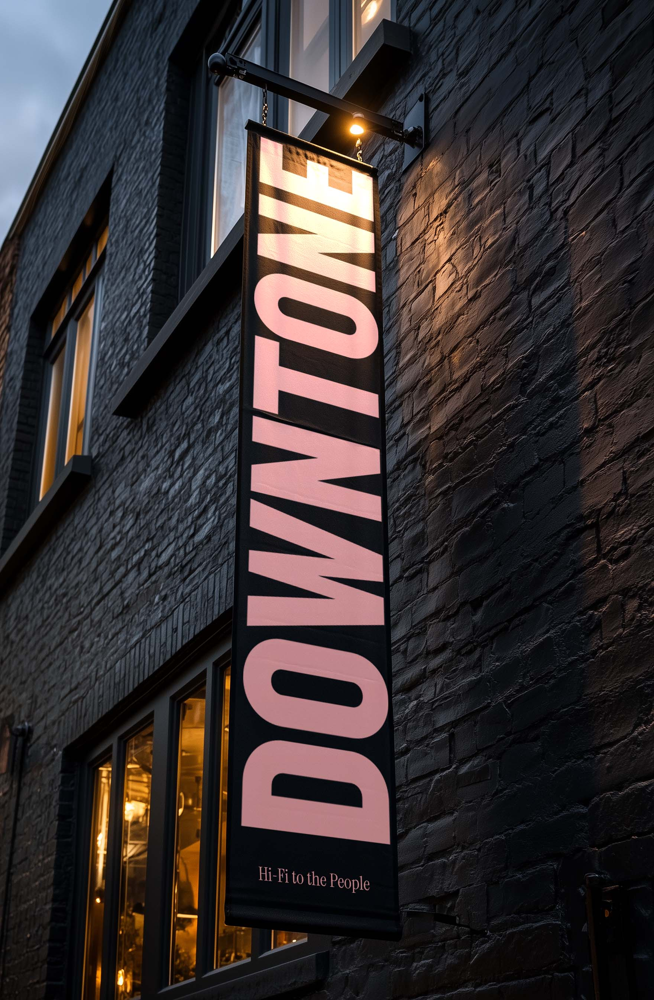
Section 01
Somewhere between a café, a cocktail bar, and a listening room — and not trying to be any one of them.
The overview
Sound meaningfully shapes how people feel, gather, and connect.
A sound-led hospitality space in Chinatown / Lower East Side — coffee, cocktails, food, and intentional listening across a single day-to-night experience. A specialty café and neighborhood gathering space by day; a seated cocktail and listening environment by night. Music is never decoration. It is a vital component of hospitality.
The definition
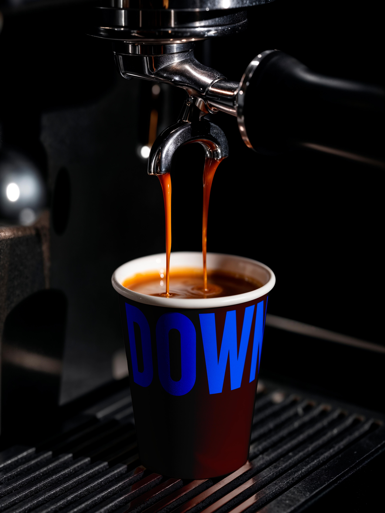
Section 02
The same room, expressed through light, sound, and pace — not theatrical transformation.
Environmental calibration
Morning
Bright, calm, daylight-dominated. Neighborhood rituals and quick transactions. Sound spacious and low — ambient, sparse dub, acoustic fields.
Afternoon
Transactional speed gives way to dwell time. Mid-tempo grooves raise the acoustic floor and favor face-to-face over video calls.
Evening
Executed at sunset. Coffee clears, light drops to warm accents, the system claims the room — still leaving space for conversation.
Late
Minimal light, long-form listening — full album sides, continuous dub. Capacity and volume managed to protect collective attention.
The levers
| Morning Routine | Afternoon Transition | Evening Social center | Late Immersive | |
|---|---|---|---|---|
| Primary guests | Regulars & remote work | Explorers & locals | Groups & after-work | Enthusiasts & community |
| Sound | Unobtrusive, warm | Rhythmic, present | Engaging, intentional | Deep listening, dynamic |
| Lighting | Natural, bright | Softening daylight | Intimate, warm | Dark, atmospheric |
| Social energy | Individual activity | Overlapping focus | Active conversation | Collective attention |
| Hospitality goal | Consistency, ease | Dwell time, comfort | Hosting, generosity | Stewardship, atmosphere |
Morning — Routine
A daily ritual regulars can trust. Not a rotation to keep up with.
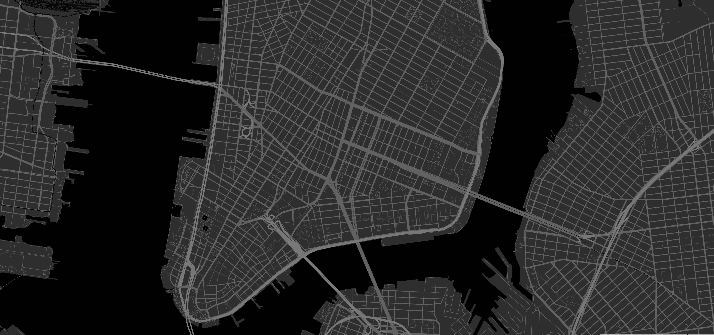
Section 03
People rarely remember what they consumed. They always remember how a room felt.
The communal medium
Listening was once social — an act of shared presence.
For generations, people gathered around radios, dancehalls, sound systems, record stores. Today, much of listening has been siloed — into headphones, algorithms, personal devices. Downtone does not exist because listening bars are a trend. It exists to build a contemporary space for communal listening — culturally valuable, humanly necessary, increasingly rare.
Institutional horizon
We are not built to maximize short-term attention or manufacture hype. Cultural institutions form through consistency rather than novelty. Through rituals rather than spectacles. Through stewardship rather than temporary ownership.
Build a room people still care about ten years from now.
Success is not an opening-weekend spike or press coverage. It is whether people still choose to gather, talk, and listen in this room a decade on.
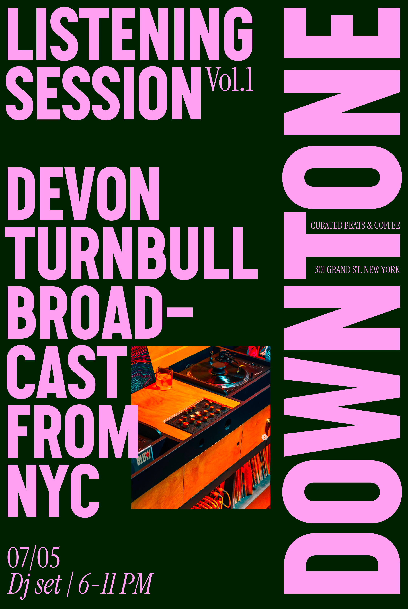
Section 04
The framework for evaluating tradeoffs and protecting what makes the room distinct over time.
Principles
01
A hospitality business before the sound system, the aesthetics, or the credibility. The room is never intimidating or precious.
Warmth over coolness · Hosting over servicing · Comfort before exclusivity
02
Not decoration, not technical spectacle. A room that feels better because sound is treated intentionally.
Emotional tone over flexing · Listening without rigidity
03
We do not optimize for covers or spikes. A healthy Tuesday matters more than a packed one-off.
Repeat behavior · Neighborhood rhythm · Long-term trust
04
Complexity weakens hospitality. Richness comes from atmosphere and curation, not excess.
Curation over abundance · Focus over sprawl
Guardrails
Neighborhood ↔ Destination
Valuable on an ordinary day. Both neighborhood ritual and destination — never admired only for special events.
Warmth ↔ Preciousness
Comfortable before impressed. Hospitality comes before coolness.
Programming ↔ Gravity
The room itself must work. Programming deepens the room; it does not carry it.
Sound ↔ Fetishism
Sound deepens gathering. Never status, gear obsession, or audiophile validation.
Founder ↔ Institution
Legible and repeatable. The room cannot only work when the founder is present.
Ambition ↔ Execution
Fewer things, exceptionally. Growth follows operational strength.
Section 05
One coherent ecosystem. Each program governed by a clear, unyielding structural boundary.
The engines
Coffee
Unpretentious counter service. Long-term roasting relationships over elite rotations — a daily ritual regulars can trust.
Beverage
Classic templates, drinkability, connection. Tea and non-alcoholic drinks get identical attention, ice, and glassware.
Food
A friction-reducer that extends dwell time. No open flame, no hood — room-temperature fare: conservas, breads, boards.
Service
Natural generosity over performance. Knowing when to deconstruct a record or a tea — and when to step back and let the room carry it.
Communal listening
Luxury listening individualizes sound. Downtone communalizes it.
Section 06
Rooted, not curated for display. Sound is part of the architecture — not a trophy.
Spatial architecture
Ground floor
Café by day, intentional cocktail and listening room by night. The shift is gradual — light, sound, energy — never theatrical. A ten-minute visit or a three-hour stay.
Basement
Deeper listening, private experiences, cultural programming. The same acoustic intimacy and controlled capacity — none of the volatility of a nightlife room.
Sound
No nightclub volume, no spectacle. Visible enough to communicate intention, integrated enough to support conversation and pace.
Business logic
Built around repeat behavior and high-quality dwell time. Continuous activity across the dayparts — morning coffee, afternoon social use, evening cocktails, late-night culture. The model relies on longer stays and neighborhood familiarity, not nightlife volatility or high-volume turnover.
Not maximum throughput. A durable hospitality institution, built through consistency.
Section 07
Part of a longer history of communal sound culture — from Jamaican sound systems to neighborhood cafés.
If we succeed
Our role is to steward a room where people can gather, listen, learn, and connect.
Downtone integrates into the cultural fabric of New York — not because it is exclusive, rare, or extraordinary, but because it becomes profoundly useful, familiar, and loved.